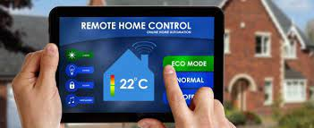

What is a smart home ?
Smart home refers to home automation devices that have internet access.
Home automation, a broader category, includes any device that can be monitored or controlled via wireless
radio signals,
not just those having internet access. When connected with the Internet,
home sensors and activation devices.

A home automation system typically connects controlled devices to a central smart home hub (sometimes called
a "gateway").
The user interface for control of the system uses either wall-mounted terminals,
tablet or desktop computers, a mobile phone application,
or a Web interface that may also be accessible off-site through the Internet.
Applications and technologies of smart homes.
Home automation is prevalent in a variety of different realms, including:
- Heating, ventilation and air conditioning (HVAC):
it is possible to have remote control of all home energy monitors over the
internet incorporating a simple and friendly user interface.
- Lighting control system: a "smart" network that incorporates communication
between various lighting system inputs and outputs,
using one or more central computing devices.

- Occupancy-aware control system: it is possible to sense the occupancy of the home using
smart meters and environmental sensors like CO2 sensors, which can be
integrated into the building automation system to
trigger automatic responses for energy efficiency and building comfort applications.
- Appliance control and integration with the smart grid and a smart meter,
taking advantage, for instance,
of high solar panel output in the middle of the day to run washing machines.
- Home robots and security: a household security system integrated
with a home automation system can provide additional services such
as remote surveillance of security cameras over the Internet,
or access control and central locking of all perimeter doors and windows.
- Leak detection, smoke and CO detectors
- Laundry-folding machine, self-making bed
- Indoor positioning systems (IPS).
- Home automation for the elderly and disabled.
- Pet and baby care, for example tracking the pets and babies'
movements and controlling pet access rights.
- Air quality control (inside and outside). For example,
Air Quality Egg is used by people at home to monitor the air quality
and pollution level in the city and create a map of the pollution.
- Smart kitchen, with refrigerator inventory, premade cooking programs, cooking surveillance.
- Voice control devices like Amazon Alexa or Google Nest used to control home appliances or systems.